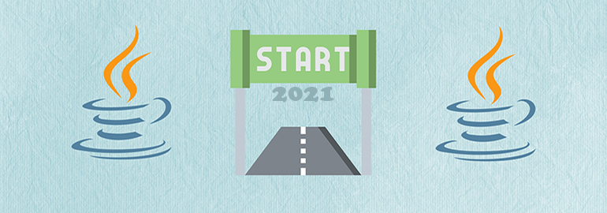

10 ценных репозиториев GitHub: о них должен знать каждый
GitHub хранит не только лучшие ИТ-проекты с открытым исходным кодом, но и массу других полезных ресурсов: бесплатные книги, идеи ПО и пр. Но в таком большом объеме информации легко потеряться.
Читать далее
Путь самоучки: какие плюсы и подводные камни ждут на нем программиста
Если вы хотите ступить на путь разработчика самоучки, готовьте себя к тому, что вам придется столкнуться с большим количеством серьезных вызовов, прежде чем получится найти свое место в ИТ.
Читать далее

7 причин, почему стоит стать Java-программистом в 2021 году
Тренды быстро меняются, появляются новые языки, к коду предъявляются все более высокие требования. Поэтому новичков всегда сильно волнует вопрос: какой же язык начать учить, чтобы точно не прогадать?
Читать далее